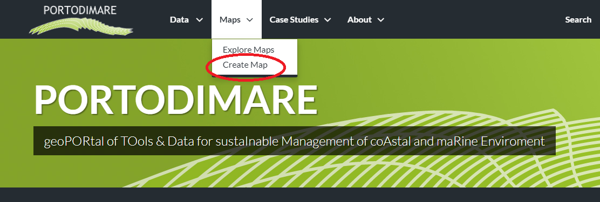
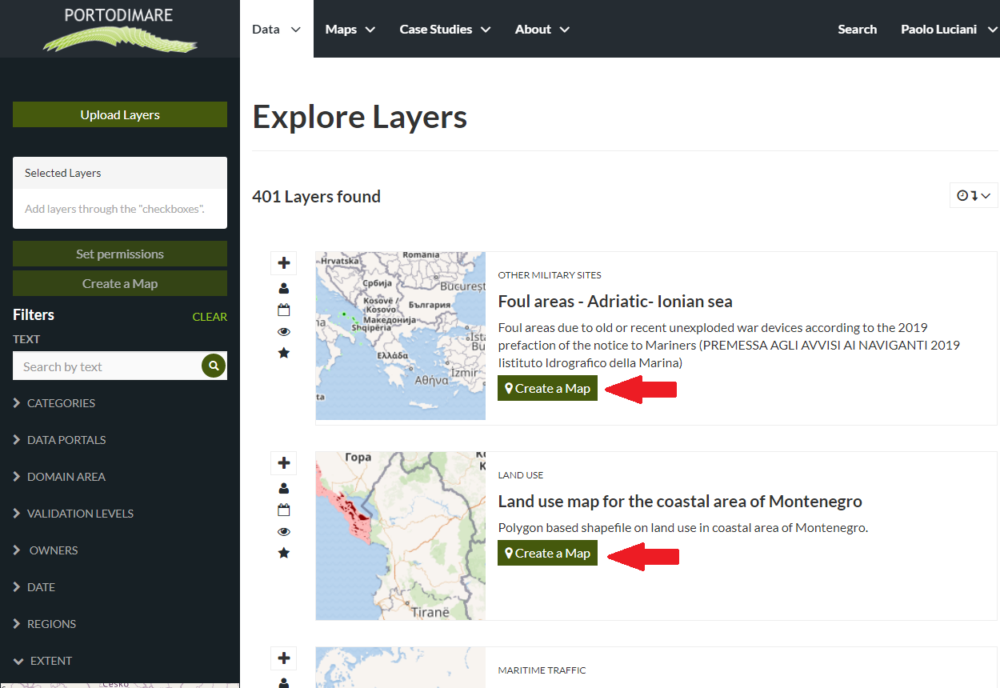
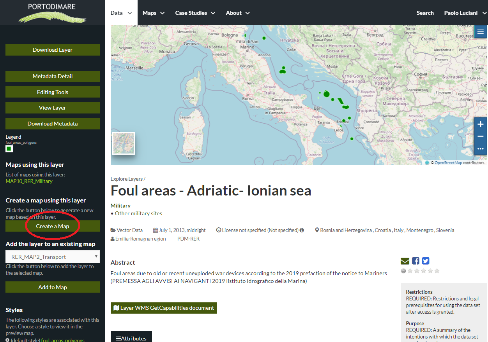

Creating Maps¶
Warning
This section show how to create a Map using some uploaded layers, combine them with some other layers from remote web services, and then share the resulting map for public viewing.
In order to create new maps you can use:
the Create Map link of the Maps dropdown menu in the navigation bar
The Create Map link
the Create Map button in the Explore Layer Page (it creates a map using a specific selected layer)
Create Map button in the Explore Layer Page
the Create a Map button - in a specific Layer Page (it creates a map using this layer)
Create a Map button - in a specific Layer Page
The new Map will open in a Map Viewer like the one in the picture below.
The Map Viewer
 button opens the Table of Contents (TOC) of the Map. It allows to manage all the layers associated with the map and to add new ones from the Catalog.
button opens the Table of Contents (TOC) of the Map. It allows to manage all the layers associated with the map and to add new ones from the Catalog.


{kind=link}
{kind=link}
Creating new Maps
If you followed the steps above, you have just created your first Map. Now you should see it in the *Explore Map*s page, see Map Information for further details.
We will take a closer look at the Map Viewer tools in the Exploring Maps section.